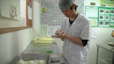
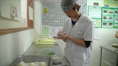

メニュー
ご利用について
| 活動曜日 | 月～土 | ||||||||||||||||||
|---|---|---|---|---|---|---|---|---|---|---|---|---|---|---|---|---|---|---|---|
| お休み | 日、年末年始、夏期 | ||||||||||||||||||
| 指導員数 | 7名 | ||||||||||||||||||
| 通所者数 | 49名（2015年6月1日現在） | ||||||||||||||||||
| 食事 | お弁当注文有り（250円/食） | ||||||||||||||||||
| 利用負担金 | なし | ||||||||||||||||||
| 工賃 | 300円～+交通費（1日800円まで） | ||||||||||||||||||
| 通所方法 | 電車、バス 送迎はなし | ||||||||||||||||||
| 新規受入れ | 応相談 | ||||||||||||||||||
| 開催イベント | ミィーティング（月1回）、研修旅行（年1回）、草むらフェスタ（年1回） | ||||||||||||||||||
| 開設 | 2012年（平成24年）4月 | ||||||||||||||||||
| 主な作業 |
|
||||||||||||||||||
| 一日の流れ |
|
 
